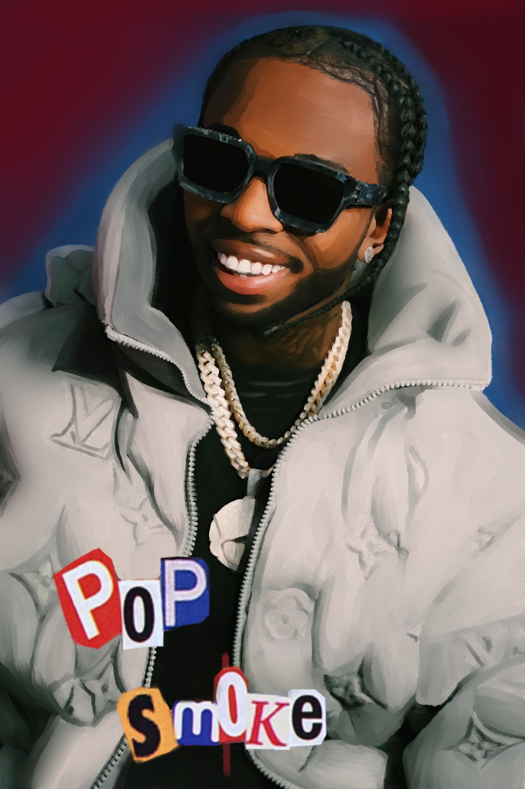
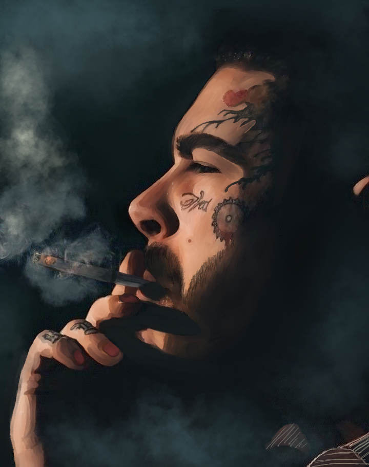
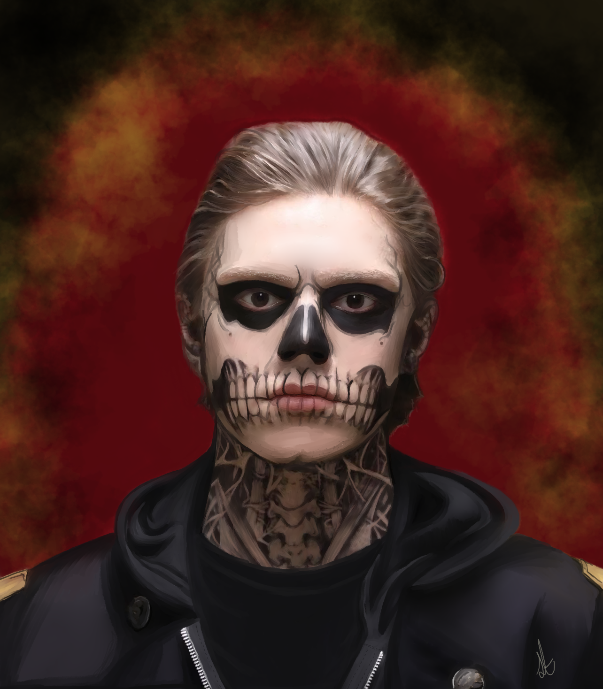
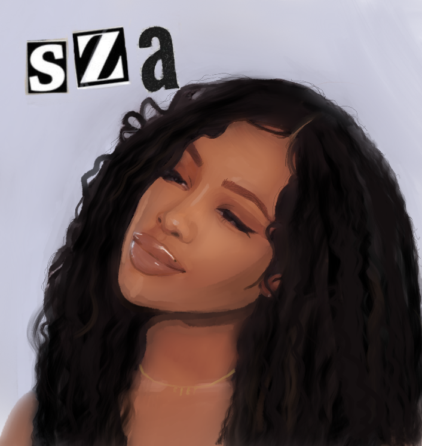

My Gallery
   Why Art?
A website created by Stefania Torchia.

Hey it's Stefania
I am currently a student from Vanier College studying in Multimedia Integration. I enjoy designing websites and 3D modeling! Who i am ? Well Im Stefania. Best way to describe myself in one word i would say creative. Since i was young i loved the arts. I explored doing art i loved drawing after time i began to to be good.After experimenting with drawing, I began painting. I just enjoyed it, so I began painting animals and landscapes. Following that, I began creating digital drawing of my favorite celebrities.
Why Art?